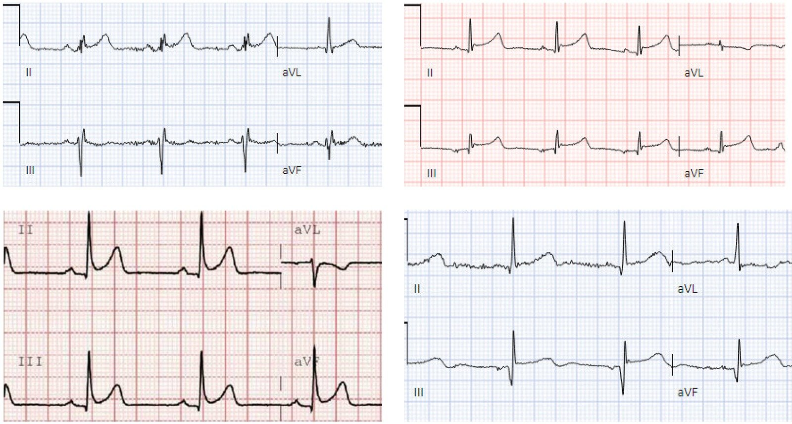
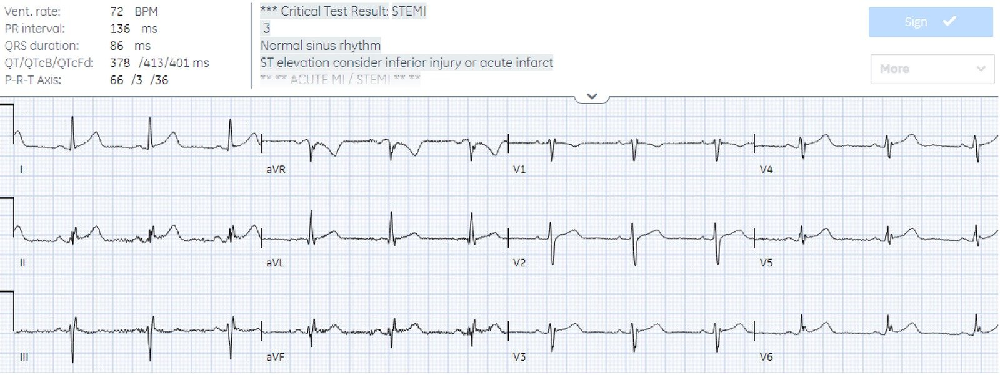
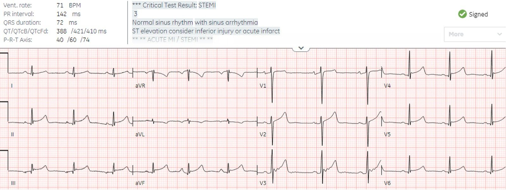
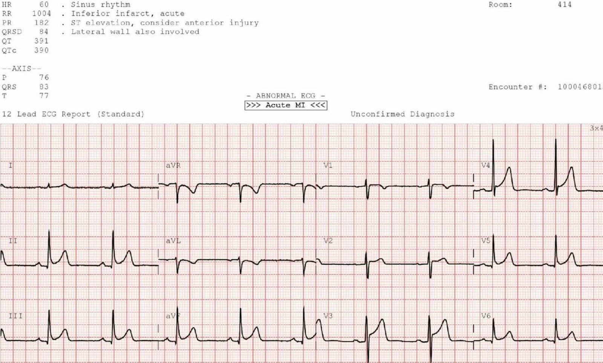
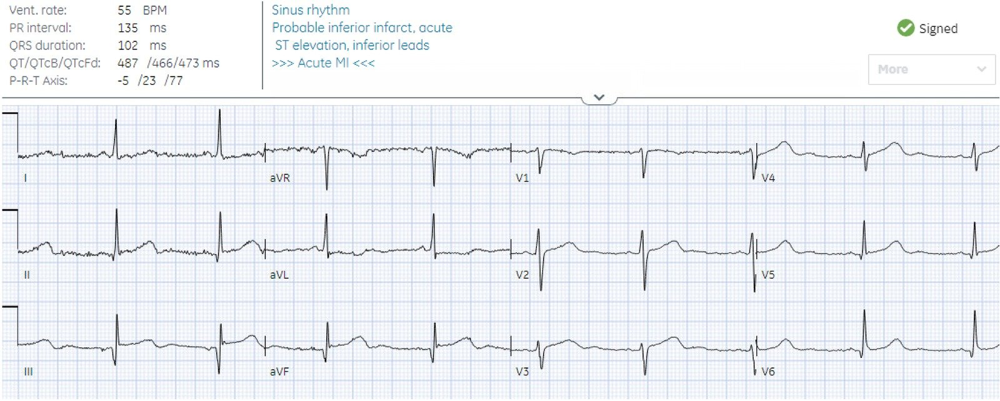
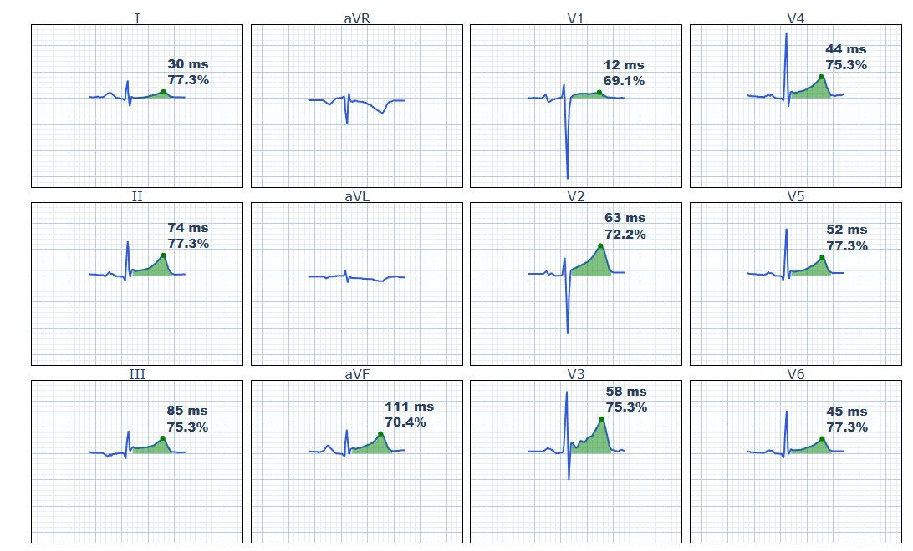
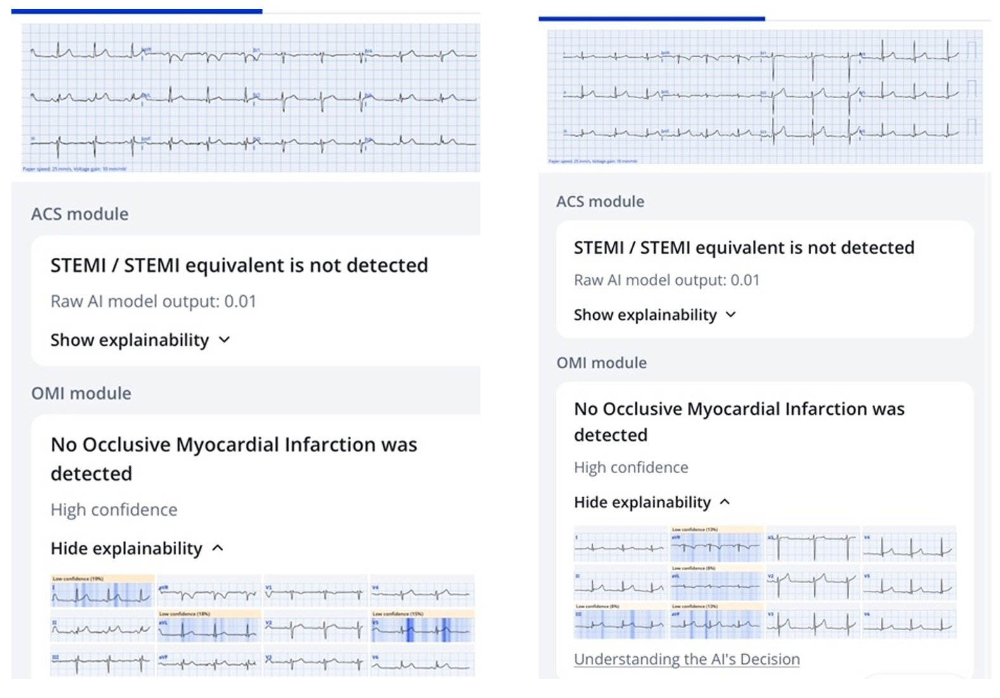
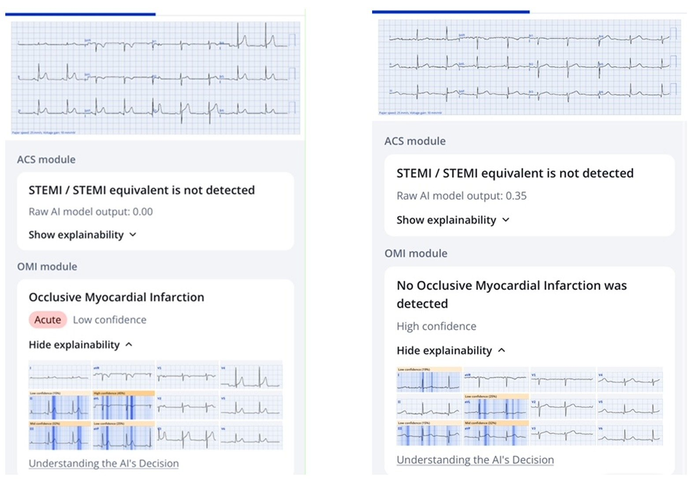
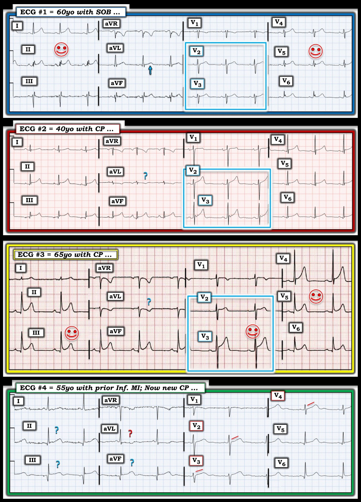

01/12/2024 — Sóng T tối cấp hay không: có điện tâm đồ nào trong 4 điện tâm đồ ‘STEMI’ này là nhồi máu cơ tim do tắc (OMI)?
Bản dịch tiếng Việt của bài "Hyperacute T wave or not: do any of these 4 ‘STEMI’ ECGs have Occlusion MI?" – Dr. Smith’s ECG Blog. Giữ nguyên toàn bộ 14 hình ảnh của bản gốc.
Bài viết của Jesse McLaren, có chỉnh sửa của Meyers
Bốn bệnh nhân đến khám vì đau ngực hoặc khó thở, và các điện tâm đồ
được ghi nhãn ‘STEMI thành dưới’. Vận dụng các nguyên tắc về sóng T tối cấp (hyperacute T waves), có ca nào bị nhồi máu cơ tim do tắc (OMI) thành dưới
không?


Bệnh nhân 1: 60 tuổi, khó thở


Bệnh nhân 2: 40 tuổi, đau ngực


Bệnh nhân 3: 65 tuổi, đau ngực


Bệnh nhân 4: 55 tuổi, tiền sử nhồi máu cơ tim thành dưới, đau ngực


Xem bài viết
gần đây về khoa học mới và đang phát triển về sóng T tối cấp, bao gồm
1. Diện tích dưới đường cong lớn hơn so với QRS
2. Tăng tính đối xứng, được định nghĩa bằng thời gian từ khởi đầu sóng T đến đỉnh so với từ đỉnh đến
cuối sóng T.
3. Giảm độ lõm, đi kèm với tính tối cấp
Điều này có thể giúp nhận diện các trường hợp STEMI âm tính giả, hay OMI STEMI âm tính (STEMI(-)OMI), có nguy cơ bị chậm tái tưới máu.
Ngược lại, sóng T ít có khả năng là tối cấp nếu chúng có
1.
Diện tích dưới đường cong nhỏ so với kích thước QRS
2.
Bất đối xứng nhiều hơn
3.
Lõm nhiều hơn
Điều này có thể giúp nhận diện các trường hợp dương tính giả có nguy cơ kích hoạt phòng thông tim (cath lab) không cần thiết.
Ngoài ra, ST chênh xuống (STD) do thiếu máu cục bộ ở aVL rất nhạy với OMI thành dưới, và loại trừ viêm màng ngoài tim. Vì vậy
OMI thành dưới rất khó xảy ra khi không có thay đổi soi gương (reciprocal) ở aVL. Mặt khác, STD ở aVL cũng có thể là soi gương của nhồi máu cơ tim thành dưới cũ, hoặc ít gặp hơn là do biến thể bình thường khi STD và sóng T đảo ngược (TWI) đồng hướng và tương xứng với QRS âm.
Bình luận của Smith: Vì vectơ ST của biến thể bình thường hướng về chuyển đạo II, thường KHÔNG có ST chênh xuống ở aVL dù có ST chênh lên ở III. Với cả viêm màng ngoài tim lẫn biến thể bình thường, vectơ này tạo ra ST chênh lên (STE) ở II nhiều hơn ở III, và không có STD ở aVL. Ngoại lệ với quy luật này hiếm gặp trong viêm màng ngoài tim, nhưng không hiếm trong tái cực sớm: ở tái cực sớm biến thể bình thường, vectơ ST đôi khi thẳng đứng (như ở bệnh nhân 3), và điều đó quả thật gây ra STD ở aVL. Tất cả những điều này có nghĩa là gì? Nghĩa là nếu có STD ở aVL thì gần như chắc chắn đó không phải viêm màng ngoài tim (nhưng có thể là viêm cơ tim). Có thể là biến thể bình thường, nhưng điều đó không phổ biến và bạn nên cân nhắc nghiêm túc rằng đó là OMI.
Hãy xem kết cục của các ca này và Queen of Hearts
đã thể hiện ra sao:
Bệnh nhân 1: 60 tuổi, khó thở
Sóng T ở II cao so với QRS và đối xứng, nhưng đây là
phân bố không đúng cho OMI thành dưới – với chuyển đạo III bình thường và chuyển đạo soi gương
aVL cũng bình thường. Troponin xét nghiệm liên tiếp bình thường.
Queen dự đoán đúng với độ tin cậy cao rằng đây KHÔNG phải OMI.
Bệnh nhân 2: 40 tuổi, đau ngực
Sóng T cao so với QRS ở III/aVF, nhưng mọi sóng T đều bất đối xứng với đỉnh nhọn. Chuyển đạo aVL có TWI rất nhẹ sau phức bộ QRS đẳng điện. Phòng thông tim
đã được kích hoạt: mạch vành bình thường, troponin bình thường.
Queen dự đoán đúng với độ tin cậy cao rằng đây KHÔNG phải OMI.
Dưới đây là phân tích của mô hình sóng T tối cấp (HATW) giai đoạn sớm, cho thấy vì sao các sóng T này KHÔNG phải tối cấp dù kích thước của chúng lớn so với QRS:


Bệnh nhân 3: 65 tuổi, đau ngực
Diện tích sóng T không lớn so với QRS nhưng sóng T đối xứng. Có TWI ở aVL
nhưng sóng này đồng hướng với QRS của nó. Các chuyển đạo thành trước cũng có sóng T tương xứng, bất đối xứng và
lõm. Phòng thông tim đã được kích hoạt, cho thấy bệnh động mạch vành mức độ nhẹ, và
troponin xét nghiệm liên tiếp bình thường.
Queen không phát hiện STEMI/tương đương STEMI nào, và có độ tin cậy thấp
rằng đây là OMI.
Bệnh nhân 4: 55 tuổi, tiền sử nhồi máu cơ tim thành dưới, đau ngực
Nhồi máu cơ tim thành dưới cũ có thể để lại STE tồn dư ở thành dưới, kèm theo STD ở aVL,
khiến việc phân biệt trở nên khó khăn. Nhưng ở đây sóng T nông và
bất đối xứng. Dựa trên tiền sử nhồi máu cơ tim cũ, người ta đã tìm được một điện tâm đồ cũ giống hệt, và
troponin xét nghiệm liên tiếp bình thường.
Queen dự đoán với độ tin cậy cao rằng đây KHÔNG phải OMI.
Như vậy kết quả đọc bằng máy tính đã ghi nhãn STEMI cho cả 4 ca này, và hậu quả là 2 ca bị đưa vào phòng thông tim không cần thiết, nhưng Queen không phát hiện STEMI ở ca nào.
Đây là 4 ca




Điều cần nhớ
1.Sóng T tối cấp cao so với QRS, với diện tích dưới
đường cong lớn, đối xứng và mất độ lõm – và có thể giúp nhận diện STEMI(-)OMI có nguy cơ chậm tái tưới máu
2. Ngược lại, sóng T cao so với
QRS ít có khả năng là tối cấp nếu chúng có diện tích dưới đường cong nhỏ,
bất đối xứng và lõm nhiều hơn – và có thể giúp nhận diện STEMI dương tính giả có nguy cơ kích hoạt phòng thông tim không cần thiết
3.Thay đổi soi gương ở aVL rất nhạy với OMI thành dưới (mới hoặc cũ) và loại trừ viêm màng ngoài tim; ít gặp hơn, STD và TWI có thể do biến thể bình thường khi chúng đồng hướng và tương xứng với QRS âm

===================================
BÌNH LUẬN CỦA TÔI, bởi KEN GRAUER, MD (1/12/2024):
===================================
Tôi rất thích những ca như ca hôm nay — vì chúng thực sự thử thách bạn. Với mục đích thảo luận giáo dục — tôi xin đưa ra một góc nhìn hơi khác về cách tôi tiếp cận 4 điện tâm đồ do bác sĩ McLaren trình bày.
- Để rõ ràng, trong Hình 1 — tôi đã sao chép lại và đánh nhãn 4 bản ghi này.
Thay vì dồn sự chú ý vào hình ảnh điện tâm đồ ở các chuyển đạo thành dưới và ở chuyển đạo aVL — tôi thấy việc xem xét cả 12 chuyển đạo là thiết yếu trong quá trình ra quyết định của mình.
=========================
Điện tâm đồ #1 — từ một bệnh nhân 60 tuổi khó thở (SOB) …
- Dù có ST chênh lên ở chuyển đạo I và II — ST chênh lên lại không có ở chuyển đạo III, và rất ít ở aVF. Như bác sĩ McLaren đã nêu — phân bố này không phù hợp với OMI thành dưới.
- Nhưng điều ngay lập tức làm giảm nghi ngờ của tôi về một biến cố cấp — là sự phân bố lan tỏa của các sóng T dương trông giống nhau, với đoạn ST lõm hướng lên (tức là dạng “mặt cười”).
- Xin nhấn mạnh: Dạng “mặt cười” hoàn toàn không bảo đảm rằng ST chênh lên là lành tính. Dù vậy — OMI cấp ít có khả năng biểu hiện hình ảnh này hơn, nhất là khi có khía điểm J rõ (như thấy ở đây tại các chuyển đạo V3,V4,V5,V6).
- Tôi thấy hình dạng rSR’ ở cả 3 chuyển đạo thành dưới khá lạ — dù ý nghĩa chưa rõ (nếu có).
- 2 đặc điểm bổ sung khiến tôi ngay lập tức gạt bỏ khả năng OMI thành dưới cấp là: i) Ở chuyển đạo aVL — đoạn ST không chênh xuống và sóng T dương; — và, ii) Đoạn ST chênh lên nhẹ tại điểm J, dốc lên thoai thoải bình thường, có hiện diện ở V2 và V3 — trong khi đặc điểm này sẽ mất đi khi có OMI thành sau (vốn rất thường đi kèm OMI thành dưới).
- Điều cốt lõi: Gộp lại — sự kết hợp các dấu hiệu trên cho phép tôi nhanh chóng kết luận rằng OMI thành dưới khó xảy ra.
=========================
Điện tâm đồ #2 — từ một bệnh nhân 40 tuổi đau ngực …
- Như bác sĩ McLaren đã nêu — các sóng T thành dưới bất đối xứng với đỉnh hẹp, rõ ràng không phải đặc trưng của sóng T tối cấp. Dù vậy — có một mức ST chênh lên đáng kể ở cả 3 chuyển đạo thành dưới.
- Tôi đặt một dấu hỏi MÀU XANH phía trên sóng T đảo ngược ở aVL — vì dù sóng T đảo ngược này nông — tôi cho rằng đáy sóng T rộng hơn mong đợi so với kích thước rất nhỏ của phức bộ QRS ở chuyển đạo này. Tôi lo ngại rằng ST-T ở aVL có thể là một thay đổi soi gương.
- Mối lo ngại của tôi giảm bớt khi đánh giá hình ảnh ST-T ở các chuyển đạo trước tim — vì cả 6 chuyển đạo trước tim đều có một mức ST chênh lên tại điểm J, với đoạn ST dốc lên thoai thoải và kết thúc bằng một sóng T dương. Hình ảnh ST-T chung ở V2 đến V5 rất giống với hình ảnh ở các chuyển đạo thành dưới (tức là Về cơ bản không có tính khu trú của ST chênh lên được thấy — bản thân điều này đã là thêm một dấu hiệu chống lại OMI cấp).
- Khía điểm J thấy ở V4,V5,V6 (và có lẽ cũng đã thấy ở V3 nếu chuyển đạo này không bị nhiễu nhiều đến vậy). Khía tương tự cũng thấy ở các chuyển đạo thành dưới.
- Cũng như với điện tâm đồ #1 — hình ảnh ST-T trông bình thường ở V2 và V3 trên điện tâm đồ #2 về cơ bản loại trừ OMI thành sau. Vì vậy, dù việc không có OMI thành sau không loại trừ khả năng OMI thành dưới cấp — điều đó quả thật khiến khả năng này thấp hơn nhiều.
- Điều cốt lõi: Gộp lại — sự kết hợp các dấu hiệu trên cho phép tôi nhanh chóng kết luận rằng OMI thành dưới khó xảy ra. Giả sử các chi tiết của bệnh sử đau ngực không gợi ý viêm màng ngoài tim — tôi nghi ngờ ST chênh lên lan tỏa trên điện tâm đồ #2 nhiều khả năng là một biến thể tái cực.


=========================
Điện tâm đồ #3 — từ một bệnh nhân 65 tuổi đau ngực …
- Tôi thấy bản ghi này có những điểm tương đồng với điện tâm đồ #1 và điện tâm đồ #2 nghiêng về không có OMI. Những điểm này gồm: i) ST chênh lên có dạng lõm hướng lên rõ rệt (dạng “mặt cười”) — và lan tỏa chứ không khu trú; — và, ii) ST chênh lên tại điểm J dốc lên ở V2 và V3 về cơ bản loại trừ OMI thành sau.
- Tôi đặt một dấu hỏi MÀU XANH phía trên sóng T đảo ngược ở aVL vì tôi không thể loại trừ khả năng đây là một thay đổi soi gương cấp. Dù vậy — do QRS ở aVL chủ yếu âm, tôi cho rằng kích thước tương đối của sóng T đảo ngược không mất tương xứng với kích thước QRS ở chuyển đạo này. Tôi nghi ngờ sóng T đảo ngược ở aVL này là bình thường và không phải một thay đổi soi gương cấp.
- Biên độ QRS không giảm ở chuyển đạo nào (như đôi khi có thể gặp trong nhồi máu cấp).
- QTc tương đối ngắn (trong khi QTc thường có xu hướng dài hơn khi có OMI cấp).
- Điều cốt lõi: Sự kết hợp các dấu hiệu trên khiến tôi nghĩ rằng OMI thành dưới khó xảy ra. Mối lo ngại chính của tôi — là mức ST chênh lên tại điểm J tương đối ở V3 nhiều hơn mức thường thấy trong các biến thể tái cực. Tìm được một điện tâm đồ trước đây của bệnh nhân 65 tuổi này có thể vô cùng giá trị để loại trừ một biến cố cấp.
=========================
Điện tâm đồ #4 — từ một bệnh nhân 55 tuổi có tiền sử nhồi máu cơ tim thành dưới; nay đau ngực mới …
- Nếu chỉ xét như một bản ghi đơn lẻ (tức là trước khi tôi biết điện tâm đồ #4 không thay đổi so với một điện tâm đồ trước đó) — tôi không hề biết các sóng Q ở chuyển đạo thành dưới kèm ST chênh lên kín đáo nhưng có thật, với một chút gợi ý sóng T đảo ngược ở phần cuối, là mới hay cũ (vì thế mà có các dấu hỏi MÀU XANH tôi thêm vào mỗi chuyển đạo thành dưới).
- Tương tự — tôi không hề biết liệu ST-T chênh xuống kín đáo, ngược chiều kiểu ảnh soi gương ở aVL có thể là (hoặc không phải là) một thay đổi soi gương cấp (vì thế mà có dấu hỏi MÀU ĐỎ tôi đặt ở aVL). Vì vậy với tôi — không phải hình ảnh ST-T ở II,III,aVF và aVL đã loại trừ OMI thành dưới cấp (hoặc mới xảy ra) — mà chính là việc tìm được một điện tâm đồ trước đó cho thấy không có thay đổi mới.
- Do bệnh nhân 55 tuổi này đến khám vì đau ngực (CP) mới — tôi chắc chắn lo ngại về mức ST chênh lên nhẹ đi kèm đoạn ST thẳng đuỗn ở chuyển đạo V2,V3,V4 (như các đường MÀU ĐỎ song song với đoạn ST ở các chuyển đạo này).
- Điều cốt lõi: Tìm được điện tâm đồ trước đó của bệnh nhân này đã loại trừ một OMI thành dưới cấp mới. Nhưng ở bệnh nhân 55 tuổi này với bệnh mạch vành đã biết và đau ngực mới — bất kể dự đoán âm tính của Queen of Hearts (QOH) — tôi sẽ không yên tâm gạt bỏ khả năng OMI do LAD chỉ dựa trên duy nhất điện tâm đồ này.